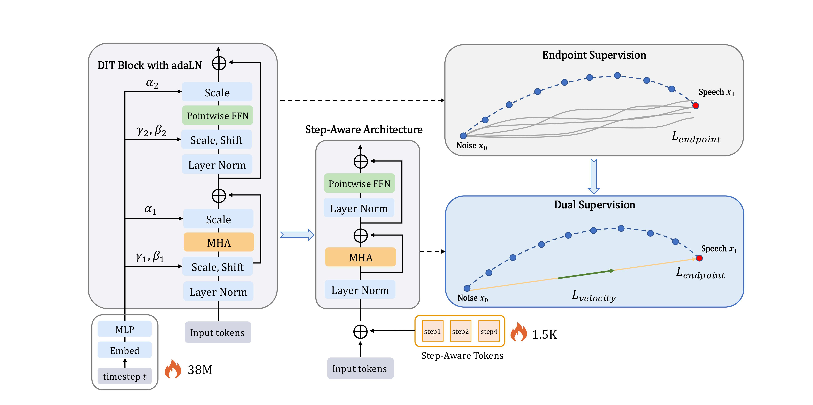

Abstract
Flow-matching models have enabled high-quality text-to-speech synthesis, but their iterative sampling process during inference incurs substantial computational cost. Although distillation is widely used to reduce the number of inference steps, existing methods often suffer from process variance due to endpoint error accumulation. Moreover, directly reusing continuous-time architectures for discrete, fixed-step generation introduces structural parameter inefficiencies.
To address these challenges, we introduce DSFlow, a modular distillation framework for few-step and one-step synthesis. DSFlow reformulates generation as a discrete prediction task and explicitly adapts the student model to the target inference regime. It improves training stability through a dual supervision strategy that combines endpoint matching with deterministic mean-velocity alignment, enforcing consistent generation trajectories across inference steps. In addition, DSFlow improves parameter efficiency by replacing continuous-time timestep conditioning with lightweight step-aware tokens, aligning model capacity with the significantly reduced timestep space of the discrete task.
Extensive experiments across diverse flow-based text-to-speech architectures demonstrate that DSFlow consistently outperforms standard distillation approaches, achieving strong few-step and one-step synthesis quality while reducing model parameters and inference cost.
Framework Architecture

Figure 1. Overview of the StepFlow framework.
Overview of the DSFlow framework. The left and center panels show the transition from a DiT block with adaLN-Zero conditioning to the proposed step-aware architecture, where the heavy time-modulation network is replaced by lightweight step-aware tokens. The right panel illustrates dual supervision, which combines endpoint matching with deterministic mean velocity alignment to guide the student along the teacher’s mean trajectory (green vectors), improving process consistency over endpoint-only distillation without additional Jacobian computation.
Audio Demonstrations
📢 All samples are generated in a zero-shot manner using the model trained on the 95K-hour Emilia dataset. Listen to the quality difference between multi-step and single-step synthesis!
1. Quality Comparison: 10-Step Teacher vs 1-Step StepFlow
Compare our 1-step synthesis against the 10-step teacher model and naive endpoint distillation.
| Model | Steps | English Sample | Mandarin Sample |
|---|---|---|---|
| Teacher (StepTTS)10 steps | 10 | ||
| StepFlow (Ours)1 step10× faster | 1 | ||
| Naive Endpoint1 step | 1 |
2. CFG Strength Ablation
Effect of classifier-free guidance (CFG) strength during inference. The student model achieves optimal performance at w=0.05, much lower than the teacher's w=0.7, because the student learns from teacher@w=0.7 targets during distillation and effectively internalizes the guidance effect.
| CFG Strength (w) | Description | English Sample | Mandarin Sample | MOS-N | SIM-o |
|---|---|---|---|---|---|
| w = 0.00 | No guidance | 4.29 | 65% | ||
| w = 0.05Optimal | Default (weak guidance) | 4.32 | 66% | ||
| w = 0.10 | Moderate guidance | 4.25 | 64% | ||
| w = 0.20 | Strong guidance | 4.10 | 59% | ||
| w = 0.50 | Very strong guidance | 3.78 | 55% |
Note: The inverted CFG curve (optimal at w=0.05 vs teacher's w=0.7) occurs because distillation internalizes the teacher's guidance effect. Using stronger inference-time CFG conflicts with this internalized guidance, causing quality degradation.
3. Ablation Study: Component Analysis
Hear the contribution of each component in StepFlow.
| Configuration | Components | English Sample | Mandarin Sample |
|---|---|---|---|
| Baseline | Endpoint only | ||
| + Dual Supervision | Endpoint + Velocity | ||
| + Step-Aware Arch | Step-aware tokens | ||
| StepFlow (Full) | All components |
Quantitative Results
StepFlow outperforms existing distillation baselines while significantly improving inference efficiency.
| Method | Steps | Parameters | MOS-N ↑ | SIM-O ↑ | RTF ↓ | Speedup |
|---|---|---|---|---|---|---|
| Teacher (StepTTS) | 10 | 154M | 4.43 ± 0.06 | 0.66 | 0.303 | 1× |
| Naive Endpoint | 1 | 154M | 3.87 ± 0.08 | 0.61 | 0.031 | 9.8× |
| Progressive Distillation | 1 | 154M | 4.12 ± 0.07 | 0.64 | 0.031 | 9.8× |
| StepFlow (Ours) | 1 | 118M (-24%) | 4.32 ± 0.06 | 0.66 | 0.012 | 25.3× |
Notes: MOS-N = Mean Opinion Score for Naturalness (1-5 scale); SIM-O = Speaker Similarity to reference (0-1); RTF = Real-Time Factor (lower is faster); All models trained on 95K-hour Emilia dataset.